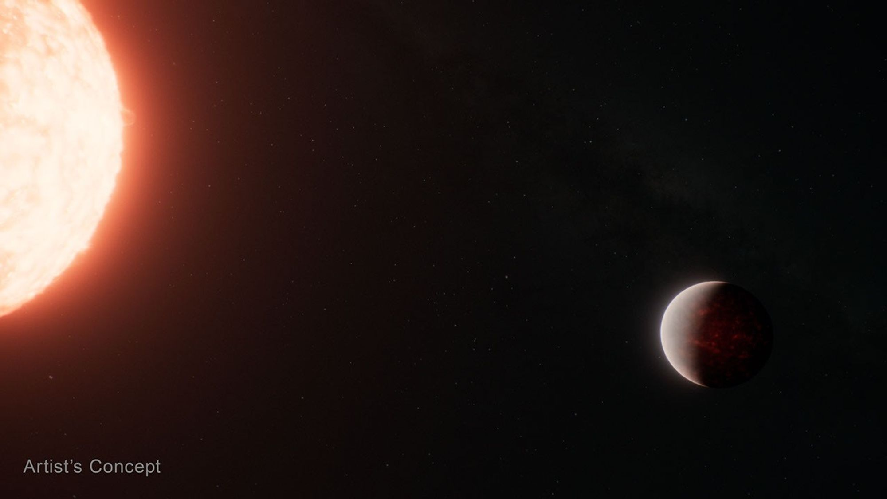

Current Research
I was extended an opportunity to conduct research under Dr. Diana Dragomnir at the Univeristy of New Mexico within her exoplanet team. I work primarily with Ph.D. cnadidate Brett Skinner, with a goal of improving detection of exoplanets. A key method of exoplanet detection is by observing transits, where the planets pass in front of earth's view of their host star, causing a dip in light data. These dips can be identified with machine learning models. Dragomir's team focuses primarily on exoplanets with only one dip in data due to a longer orbital period, so my goal is to improve the currentlyh used Deep Transit model to better identify those singular dips in years of data across the sky. I work primarily with TESS data, as that is where the majority of current possible exoplanets are being found. I have worked with this team for nearly a year now.
Future Research
I was accepted for an REU program at the Smithsonian Astrophysical Observatory. Currently, I have been assigned to work under Dr. Benjamin Cassese, and will likely work with data from the James Webb Space telescope to investugate exoplanets and oblateness.
Conferences
Donec eget ex magna. situltricies erat it quis lorem.
High School Engineering Projects
Donec eget ex magna. situltricies erat it quis lorem.
Volunteer/Observing Experience
Donec eget ex magna. situltricies erat it quis lorem.